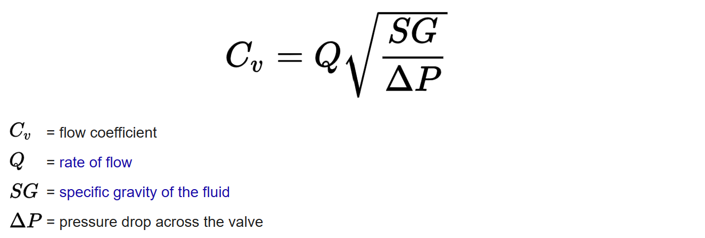

Testing & Controlling Prosthetic Knee Actuator
Outcome:
At the prosthetics company Proteor USA, I designed an automated flow test and mechanical fixture to characterize over ½ million voice coil valve actuators per year for prosthetic knee production, reducing manual testing time from 45 minutes to 20 seconds. I worked with the principal controls engineer to characterize these custom valves using system ID techniques and designed a nonlinear controller, improving steady-state response by 20% and transient response by 31%.
Motivation:
Proteor USA's flagship prosthetic knee Quattro is a smart passive knee, in that it provides varying resistance at different stages of the gait (walking) cycle. For instance, when getting up from a chair, the knee would need to lock in place for the amputated user to get up, whereas when walking, the leg should swing freely with no resistance. The resistance in the knee is controlled with a voice coil valve, which can limit the speed at which fluid enters or exits the piston cylinder assembly controlling the movement of the leg, in turn adding resistance to the leg's movement.
To make their flagship prosthetic knee Quattro more efficient, I collaborated with the Principal Mechanical Engineer and Principal Controls Engineer to implement a smaller and more efficient custom voice coil valve. The previous industry valve used was expensive, inefficient, and difficult to control with little information provided on its inner workings. Designed by the Mechanical Engineer for over 3 years, the new custom valve was planned to be manufactured in-house, reducing the part cost and allowing opportunity for better control of the valve. However, the engineers at Proteor needed a simple and quick test to detect any manufacturing defects in these valves. This automated quick test needed to be designed and implemented by the project launch date, which coincided with the end date of my internship. Furthermore, the current low-level controller for the voice coil valve used a very simple PID approach, which was not the most accurate at all stages of the gait cycle for the non-linear valve system. This was resulting in patients feeling resistance when there should not be any. I was tasked with designing a new controller that mitigated these errors.
Results:
Using my knowledge of mechatronic systems, I designed an automated test that measured the dimensionless coefficient of flow, as the valve spindle moved through different positions (causing different knee resistances). A functional valve and malfunctional valve would produce different curves of flow coefficients vs spindle positions. Furthermore, instead of finely measuring the valve position at each small increment, I sparsely sampled positions and applied a spline curve to best fit the data. Overall, I reduced the testing time from 45 minutes of manual testing time to 80 seconds of automated testing with densely populated points, to 20 seconds of automated testing with sparsely populated points. This test is used by the team today to efficiently evaluate potential defects in over ½ million valves a year.
When designing the controller, I performed system ID and formed an analytic math model of the valve system. Being a non-linear system (with the smallest degree being power of 4), we linearized at the aforementioned sparsely sampled points, and tuned the PID controller at those points to create an optimal gain-scheduled controller.
Technical Details:
- The designed automated test involved measuring the coefficient of flow as the valve spindle moved through different positions using an ALICAT sensor. The coefficient of flow equation is:
- 
- During the test, the controller would attempt to move the spindle to a desired position. Air at a fixed flow rate would burst through the valve at that point, and the ALICAT flow meter would measure the pressure into and out of the valve. The computer would record these pressures and calculate the flow coefficient value. This value would be recorded, alongside the actual position of the spindle (measured with the internal hall-effect sensor).
- Instead of finely measuring the valve position at each small increment, I sparsely sampled positions and applied a spline curve to best fit the data. This reduced the testing time from 80s to 20s, by looking at fewer points.
- By performing system ID, I developed analytic math model of the valve. The valve was actuated by a coil actuator which manipulated the magnetic field in the valve, causing the spindle to move. To model these complex magnetic field interactions, the open-source FEMM software was utilized.
- Being a non-linear system (with the smallest degree being power of 4), we linearized at the sparsely sampled points, and found the desired gains using the analytic model.
- The desired gains were fine-tuned for the final gain-scheduled controller, which improved steady-state response by 20% and transient response by 31% overall.
Prosthetic with Voice Coil Valve Patent:
A prosthetic includes a pair of prosthetic members movably coupled together to allow movement of the pair of prosthetic members with respect to one another. A hydraulic actuator or damper including hydraulic fluid in a hydraulic chamber is coupled to one of the pair of prosthetic members. A hydraulic piston is movably disposed in the hydraulic chamber and coupled to another of the pair of prosthetic members. A hydraulic flow channel is fluidly coupled between opposite sides of the chamber to allow hydraulic fluid to move between the opposite sides of the chamber as the hydraulic piston moves therein. A voice coil valve is coupled to the hydraulic flow channel to vary resistance to flow of hydraulic fluid through the flow channel, and thus movement of the piston in the chamber, and thus influencing a rate of movement of the pair of prosthetic members with respect to one another.